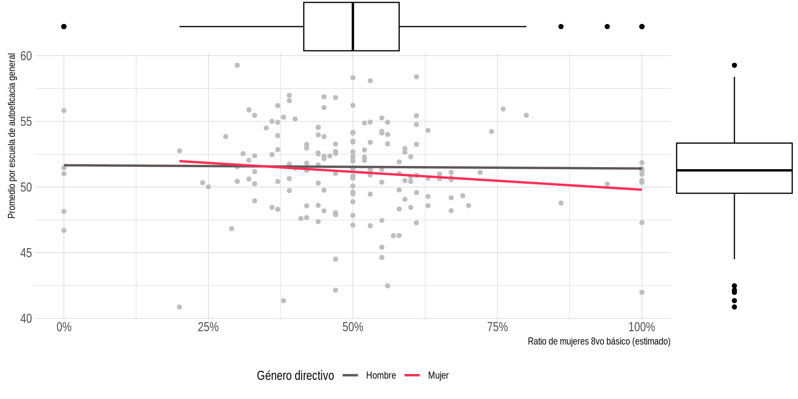
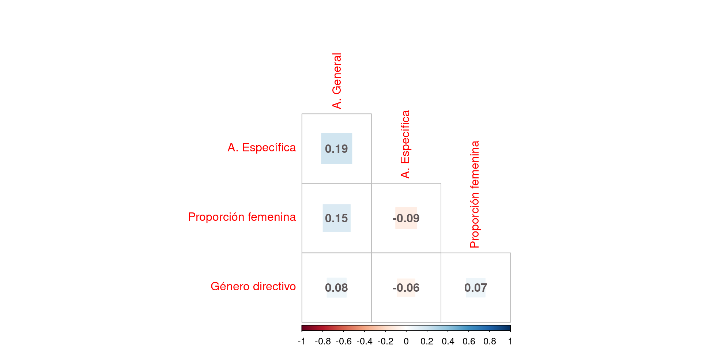
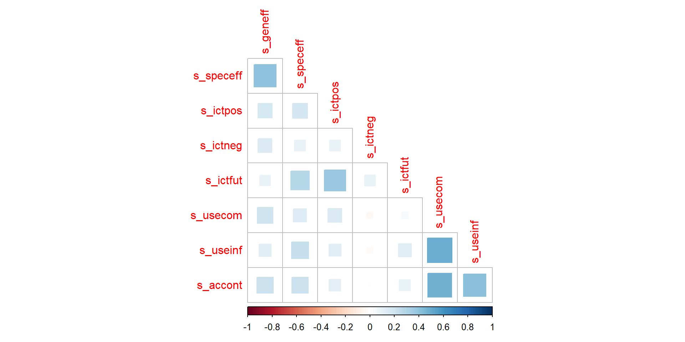

| Nivel | Objetivos específicos | Hipótesis | Análisis |
|---|---|---|---|
| Nivel 1: Estudiantes | Explorar la variación por entre 2013 y 2018 de la distribución por género de las expectativas de autoeficacia en las TIC. | La brecha de género en autoeficacia ha disminuido entre 2013 y 2018. | Descriptivo |
| Nivel 1: Estudiantes | Explorar la distribución por género de la autoeficacia, la valoración social y el uso extra-escolar de las TIC en el año 2018. | Los hombres presentan mayores niveles de autoeficacia, valoración social y uso de las TIC que las mujeres. | Descriptivo |
| Nivel 1: Estudiantes | Relacionar la variación individual por género de las expectativas de autoeficacia en las TIC con los tipos de uso y la valoración social de las TIC en el año 2018. | Las mujeres aumentan en mayor medida su autoeficacia cuando aumentan su uso comunicacional y valoración negativa sobre las TIC, en cambio en los hombres aumenta en mayor medida cuando aumentan su uso informacional y académico, sus expectativas de uso futuro y su valoración positiva. | Correlación de varianza |
| Nivel 2: Escuelas | Relacionar el promedio por establecimiento de las expectativas de autoeficacia en las TIC con la composición de género del establecimiento educacional en el año 2018. | Mientras aumenta la cantidad de hombres en los establecimientos, aumenta en mayor medida el promedio de autoeficacia | Correlación de varianza |
| Multinivel | Determinar el efecto que tiene la composición de género del establecimiento educacional, los tipos de uso y la valoración social en las expectativas de autoeficacia de las tecnologías computacionales según género en el año 2018. | Las y los estudiantes aumentan en mayor medida su autoeficacia cuando están rodeadas/os de estudiantes y directivos de su mismo género en el establecimiento escolar. Este efecto es mayor en hombres que en mujeres. | Efecto aleatorio con moderación entre niveles |
Más allá del desempeño. Brechas de autoeficacia tecnológica y composición de género en contextos escolares chilenos
Juan Carlos Castillo, Daniel Miranda y Nicolás Tobar
Introducción
Problema
- Digitalización del mundo e integración desde las TIC: Diagnóstico de las brechas de género en los 90’s.
- Las brechas han ido disminuyendo dada la masificación de TICS (Hargittai & Shafer, 2006).
- Algunos autores proponen que más bien ahora se producen diferencias de uso de las tecnologías por género: Hombres más usos técnicos operativos, mujeres más usos comunicacionales-sociales (Punter et al., 2017).
- Encuesta ICILS IEA (Gebhardt et al., 2019):
- Estudio a nivel internacional para medir y evaluar la alfabetización computacional y el manejo de información de los estudiantes de 8ºgrado (13-14 años).
- Dos instrumentos: Test de pensamiento computacional y cuestionario sobre acceso, uso, percepciones y actitudes a las TIC.
- En 2013 Y 2018 las mujeres lograron puntajes más altos que los hombres. En Chile estas diferencias tienden a no ser significativas.
- Hombres reportan mayor autoeficacia avanzada, pero correlaciona menos con el puntaje del test que en las mujeres.
- Pareciera que los hombres sobreestiman sus capacidades con las TIC mientras que las mujeres se subestiman. Además presentan mayores niveles de interés y motivación sobre las tecnologías.
- Aproximarse a brechas en las actitudes y motivaciones respecto a las tecnologías antes que a su desempeño.
- Autoeficacia no solo es buen predictora del desempeño del puntaje de la prueba ICILS, sino también de los tipos de uso y las actitudes sobre las tecnologías.
Relaciones logradas con las TIC
- Rosa (2019) argumenta que la sociología ha estado excesivamente centrada en los recursos como habilitantes del desempeño social del individuo. La pregunta moral ha dejado de lado la pregunta ética: Crear relaciones logradas con el mundo.
- Una relación resonante es donde se refuerzan las expectativas de autoeficacia y la motivación intrínseca de las acciones de nuestra vida (Ryan & Deci, 2000). Esto permite una mayor valoración del entorno y autodeterminación individual.
- Si en términos de desempeño no hay brechas, y pareciera que los temas de acceso y uso ya están menos latentes en los niños ¿Por qué no explorar “brechas” de autoeficacia, motivación y valoración de las tecnolgoías?
Identidad, grupos de referencia y estereotipo
- La concepción del estatus está anclada a comparaciones con grupos de referencia. Interpretamos nuestro valor según nuestros relativamente iguales y distintos (Turner, 2004).
- La teoría de la amenaza del estereotipo de Steele & Aronson (1995) explica que las personas realizan peor una tarea cuando se les recuerda que el grupo al que pertenecen suele obtener un rendimiento bajo.
- Sistemáticamente, las mujeres se suelen subestimar en actividades laborales y académicas en tanto se comparan con los hombres. Se reciben incentivos sociales para ello (Kirsch, 2018).
- Vekiri & Chronaki (2008) muestran que los niños reciben mayor apoyo de padres y de sus compañeros que las niñas. Como consecuencia, se sienten más capaces en el uso de tecnologías, crecen con mayor valoración social de ellas y tienen mayor motivación hacia las tecnologías que sus compañeras.
- ¿Se refuerza esta tendencia cuando las y los estudiantes están rodeados de gente de su mismo género?
- Estudios de composición de género: Hallazgos demuestran que las mujeres aumentan su rendimiento y satisfacción laboral y académica cuando están rodeadas de directivas y colegas mujeres.
- Ausencia de estudios de composición con ICILS y oportunidad de aproximarse a este efecto multinivel.
Pregunta
¿Cómo la composición de género del establecimiento y las actitudes hacia las tecnologías afectan las expectativas de autoeficacia sobre las tecnologías de los hombres y las mujeres estudiantes de octavo básico en Chile?
Objetivos, hipótesis y análisis
Variables
Base de datos ICILS Chile
- Medición durante
Autoeficacia
¿En qué medida puedes realizar cada una de estas tareas utilizando las TIC?
Respuestas:
- Sé cómo realizarlo.
- Nunca lo he hecho antes pero podría realizarlo.
- No creo que podría realizarlo.
Autoeficacia General
- Editar fotografías digitales
- Escribir o editar textos para una tarea escolar
- Encontrar información relevante para un proyecto escolar en internet
- Crear una presentación multimedia
- Subir textos, imágenes o videos en un perfil online
- Insertar una imagen en un documento o mensaje
- Instalar un programa en el computador
- Juzgar cuando la información que encuentro en internet es confiable
Autoeficacia específica
- Crear una base de datos
- Construir o editar un sitio web
- Crear una aplicación o programa para el computador
- Configurar la conexión a internet local de dispositivos computacionales
Independientes nivel estudiantes
| Name | Type | Label | missings | Value Labels |
| s_sex | categorical | 0 (0.00%) | 0 1 |
|
| s_ictpos | numeric | Positive perceptions of ICT for society | 120 (3.88%) | Not administered or missing by design Presented but not answered or invalid |
| s_ictneg | numeric | Negative perceptions of ICT for society | 123 (3.98%) | Not administered or missing by design Presented but not answered or invalid |
| s_ictfut | numeric | Expectations of future ICT use for work and study | 189 (6.11%) | Not administered or missing by design Presented but not answered or invalid |
| s_usestd | numeric | Use of ICT for study purposes | 59 (1.91%) | Not administered or missing by design Presented but not answered or invalid |
| s_useinf | numeric | Use of ICT for exchanging information | 146 (4.72%) | Not administered or missing by design Presented but not answered or invalid |
| s_accont | numeric | Use of ICT for accessing content from the internet | 63 (2.04%) | Not administered or missing by design Presented but not answered or invalid |
| s_usecom | numeric | Use of ICT for social communication | 47 (1.52%) | Not administered or missing by design Presented but not answered or invalid |
Independientes nivel escuela
| Name | Type | Label | missings | Value Labels |
| c_p_sex | categorical | 0 (0.00%) | 0 1 NaN |
|
| c_f_ratio_grade | numeric | School proportion of females students in eigth grade (estimation) |
0 (0.00%) | 0.0-1.0 |
Modelo Analítico
flowchart LR
subgraph Escuela
F["Ratio de mujeres escuela"] -. "Moderación" .-> A
E["Género directivo (Mujer)"] -. "Moderación" .-> A
subgraph Estudiante
A{"Género (Binaria)"} -- "(+)" --> B(["Mujer (1)"])
A -- "(-)" --> C(["Hombre/otro (0)"])
B -- "(-)" --> D["Autoeficacia (General y Específica)"]
C -- "(+)" --> D
H["Actitudes Negativas"] -- "(-)" --> D
I["Actitudes Positivas"] -- "(+)" --> D
J["Expectativa Uso futuro"] -- "(+)" --> D
end
end
Nivel 1: Estudiantes
Variación por año de expectativas de autoeficacia
| Genero | Puntaje | |
|---|---|---|
| 2013 | ||
| General | Hombres | 52 |
| General | Mujeres | 54 |
| General | Brecha | 2 |
| Específica | Hombres | 53 |
| Específica | Mujeres | 50 |
| Específica | Brecha | -3 |
| 2018 | ||
| General | Hombres | 51 |
| General | Mujeres | 52 |
| General | Brecha | 1 |
| Específica | Hombres | 52 |
| Específica | Mujeres | 50 |
| Específica | Brecha | -2 |
Género, autoeficacia y valoración social
Relaciones de varianza


Nivel 2: Escuelas
Autoeficacia y establecimientos
Modelos multinivel
Modelos nulos
| ICT self-efficacy regarding the use of general applications |
ICT self-efficacy regarding the use of specialist applications |
Expectations of future ICT use for work and study |
Positive perceptions of ICT for society |
Negative perceptions of ICT for society |
Use of ICT for social communication |
Use of ICT for exchanging information |
Use of ICT for study purposes |
Use of ICT for accessing content from the internet |
||||||||||
|---|---|---|---|---|---|---|---|---|---|---|---|---|---|---|---|---|---|---|
| Predictors | Estimates | p | Estimates | p | Estimates | p | Estimates | p | Estimates | p | Estimates | p | Estimates | p | Estimates | p | Estimates | p |
| (Intercept) | 51.67 | <0.001 | 51.29 | <0.001 | 51.26 | <0.001 | 49.56 | <0.001 | 51.92 | <0.001 | 48.71 | <0.001 | 51.31 | <0.001 | 50.88 | <0.001 | 48.34 | <0.001 |
| Random Effects | ||||||||||||||||||
| σ2 | 74.52 | 81.63 | 90.17 | 94.35 | 94.87 | 97.47 | 97.00 | 60.88 | 90.24 | |||||||||
| τ00 | 4.28 idschool | 5.03 idschool | 4.73 idschool | 2.20 idschool | 1.53 idschool | 3.31 idschool | 3.28 idschool | 3.00 idschool | 3.01 idschool | |||||||||
| ICC | 0.05 | 0.06 | 0.05 | 0.02 | 0.02 | 0.03 | 0.03 | 0.05 | 0.03 | |||||||||
| N | 178 idschool | 178 idschool | 178 idschool | 178 idschool | 178 idschool | 178 idschool | 178 idschool | 178 idschool | 178 idschool | |||||||||
| Observations | 2999 | 2996 | 2903 | 2972 | 2969 | 3045 | 2946 | 3033 | 3029 | |||||||||
| Marginal R2 / Conditional R2 | 0.000 / 0.054 | 0.000 / 0.058 | 0.000 / 0.050 | 0.000 / 0.023 | 0.000 / 0.016 | 0.000 / 0.033 | 0.000 / 0.033 | 0.000 / 0.047 | 0.000 / 0.032 | |||||||||
Efectos fijos
| ICT self-efficacy regarding the use of general applications |
ICT self-efficacy regarding the use of specialist applications |
|||
|---|---|---|---|---|
| Predictors | Estimates | p | Estimates | p |
| (Intercept) | 16.73 | <0.001 | 8.24 | <0.001 |
| Sex of student | 1.14 | <0.001 | -1.38 | <0.001 |
| Sex of principal | 0.56 | 0.193 | -0.30 | 0.487 |
| School proportion of females students in eigth grade |
1.29 | 0.302 | -0.38 | 0.763 |
| ICT self-efficacy regarding the use of specialist applications |
0.39 | <0.001 | ||
| Expectations of future ICT use for work and study |
-0.00 | 0.886 | 0.16 | <0.001 |
| Positive perceptions of ICT for society |
0.09 | <0.001 | 0.03 | 0.090 |
| Negative perceptions of ICT for society |
0.04 | 0.003 | 0.02 | 0.237 |
| Use of ICT for social communication |
0.11 | <0.001 | -0.04 | 0.023 |
| Use of ICT for exchanging information |
-0.08 | <0.001 | 0.12 | <0.001 |
| Use of ICT for study purposes |
0.03 | 0.166 | 0.11 | <0.001 |
| Use of ICT for accessing content from the internet |
0.08 | <0.001 | 0.04 | 0.044 |
| ICT self-efficacy regarding the use of general applications |
0.42 | <0.001 | ||
| Random Effects | ||||
| σ2 | 51.69 | 55.58 | ||
| τ00 | 4.47 idschool | 4.34 idschool | ||
| ICC | 0.08 | 0.07 | ||
| N | 175 idschool | 175 idschool | ||
| Observations | 2742 | 2742 | ||
| Marginal R2 / Conditional R2 | 0.263 / 0.321 | 0.295 / 0.346 | ||
Pendiente aleatoria con moderación
| s geneff | s speceff | |||
|---|---|---|---|---|
| Predictors | Estimates | p | Estimates | p |
| (Intercept) | 17.87 | <0.001 | 5.73 | 0.001 |
| s sex | -0.74 | 0.514 | 2.16 | 0.046 |
| c f ratio grade | -1.06 | 0.576 | 3.62 | 0.010 |
| s speceff | 0.40 | <0.001 | ||
| s ictfut | -0.01 | 0.593 | 0.18 | <0.001 |
| s ictpos | 0.10 | <0.001 | 0.03 | 0.132 |
| s ictneg | 0.05 | 0.001 | 0.02 | 0.117 |
| s usecom | 0.12 | <0.001 | -0.05 | 0.006 |
| s useinf | -0.09 | <0.001 | 0.13 | <0.001 |
| s usestd | 0.03 | 0.187 | 0.12 | <0.001 |
| s accont | 0.07 | <0.001 | 0.03 | 0.090 |
| s sex × c f ratio grade | 3.86 | 0.079 | -6.94 | 0.001 |
| s geneff | 0.41 | <0.001 | ||
| Random Effects | ||||
| σ2 | 52.37 | 57.58 | ||
| τ00 | 5.75 idschool | 0.00 idschool | ||
| τ11 | 0.32 idschool.s_sex | 3.29 idschool.s_sex | ||
| ρ01 | -1.00 idschool | |||
| N | 178 idschool | 178 idschool | ||
| Observations | 2797 | 2797 | ||
| Marginal R2 / Conditional R2 | 0.282 / NA | 0.307 / NA | ||
¿Es relevante la composición de género?
Conclusiones
- fsd
Referencias
Gebhardt, E., Thomson, S., Ainley, J., & Hillman, K. (2019). Gender Differences in Computer and Information Literacy: An In-depth Analysis of Data from ICILS (Vol. 8). Springer International Publishing. https://doi.org/10.1007/978-3-030-26203-7
Hargittai, E., & Shafer, S. (2006). Differences in Actual and Perceived Online Skills: The Role of Gender. Social Science Quarterly, 87(2), 432–448. https://doi.org/10.1111/j.1540-6237.2006.00389.x
Kirsch, A. (2018). The gender composition of corporate boards: A review and research agenda. The Leadership Quarterly, 29(2), 346–364. https://doi.org/10.1016/j.leaqua.2017.06.001
Punter, R. A., Meelissen, M. R., & Glas, C. A. (2017). Gender differences in computer and information literacy: An exploration of the performances of girls and boys in ICILS 2013. European Educational Research Journal, 16(6), 762–780. https://doi.org/10.1177/1474904116672468
Rosa, H. (2019). Resonancia: una sociología de la relación con el mundo (Primera edición). Katz.
Ryan, R. M., & Deci, E. L. (2000). Self-determination theory and the facilitation of intrinsic motivation, social development, and well-being. American Psychologist, 55(1), 68–78. https://doi.org/10.1037/0003-066X.55.1.68
Steele, C. M., & Aronson, J. (1995). Stereotype threat and the intellectual test performance of African Americans. Journal of Personality and Social Psychology, 69(5), 797–811. https://doi.org/10.1037/0022-3514.69.5.797
Turner, H. T., John C. (2004). The Social Identity Theory of Intergroup Behavior. In Political Psychology. Psychology Press.
Vekiri, I., & Chronaki, A. (2008). Gender issues in technology use: Perceived social support, computer self-efficacy and value beliefs, and computer use beyond school. Computers & Education, 51(3), 1392–1404. https://doi.org/10.1016/j.compedu.2008.01.003